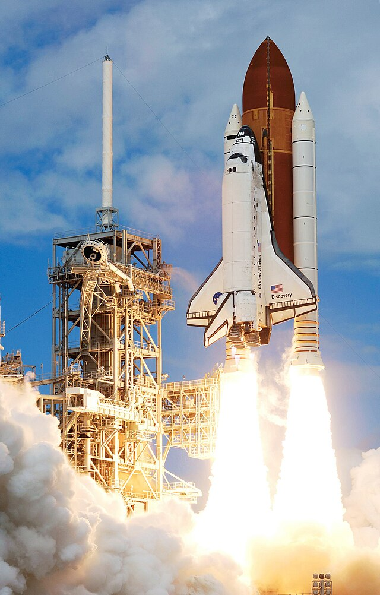

Program Description
The Space Shuttle program, initiated by NASA in 1972, was a revolutionary effort to create a reusable spacecraft capable of carrying astronauts and cargo into space and returning them safely to Earth. The primary goal of the program was to reduce the cost of access to space by reusing spacecraft, making space exploration more sustainable. The Space Shuttle could carry a crew of up to seven astronauts and was equipped with a large payload bay, allowing it to deliver satellites, science experiments, and supplies to low Earth orbit, including the International Space Station (ISS). The program spanned 30 years, from its first flight in 1981 to its retirement in 2011, and included 135 missions. The Space Shuttle played a crucial role in the construction of the ISS, satellite deployment, and scientific research. It represented a significant leap forward in the way we access and explore space, despite challenges and tragedies, including the loss of the Challenger and Columbia crews.
Notable Missions
- STS-1: The first flight of the Space Shuttle, launched on April 12, 1981, with John Young and Robert Crippen aboard. It was a historic test flight that demonstrated the shuttle’s capabilities.
- STS-7: On June 18, 1983, Sally Ride became the first American woman in space aboard the Space Shuttle Challenger, further breaking barriers in space exploration.
- STS-51-L: On January 28, 1986, the Challenger disaster occurred, tragically resulting in the deaths of seven astronauts, including Christa McAuliffe, a teacher. This event led to a suspension of shuttle flights and a reassessment of safety protocols.
- STS-107: On February 1, 2003, the Columbia disaster occurred upon re-entry, killing all seven crew members. This highlighted the shuttle’s vulnerability during re-entry and led to significant changes in safety practices.
- STS-135: The final Space Shuttle mission, launched on July 8, 2011, aboard Atlantis, delivered supplies to the ISS and marked the end of the Space Shuttle era, closing one chapter in human space exploration.
Notable Astronauts
- John Young: Commanded the first shuttle mission, STS-1, and was a veteran of both the Gemini and Apollo programs.
- Sally Ride: The first American woman in space, she flew on STS-7 and became a trailblazer for women in space.
- Christa McAuliffe: A teacher selected to fly on Challenger as part of the Teacher in Space program; her tragic death during STS-51-L was a national loss.
- Ellen Ochoa: The first Hispanic woman to go to space, flying on STS-56 in 1993.
- Ken Bowersox: A veteran astronaut with multiple shuttle flights, Bowersox also served aboard the ISS during long-duration missions.
- Story Musgrave: A medical doctor and astronaut who flew on six Space Shuttle missions, Musgrave contributed to both the design of the shuttle and various space station missions.
- Randy Bresnik: A veteran of two shuttle missions, Bresnik became a prominent figure in the human spaceflight community and later flew to the ISS aboard a Soyuz spacecraft.
Spacecraft
The Space Shuttle consisted of three main components: the Orbiter, the External Tank, and the Solid Rocket Boosters. The Orbiter was the shuttle’s main spacecraft, which housed the crew and payloads. It was capable of carrying astronauts into space and returning to Earth with its wings for a runway landing. The External Tank provided the fuel necessary for the shuttle’s launch but was discarded during ascent and burned up upon re-entry. The Solid Rocket Boosters provided the initial thrust during launch and were jettisoned once their fuel was expended. The shuttle's unique design allowed it to carry large payloads, including satellites, science experiments, and modules for the ISS. The Space Shuttle fleet included five orbiters: Columbia, Challenger, Discovery, Atlantis, and Endeavour, each with its own distinctive missions and milestones. The program revolutionized space exploration by demonstrating reusable spacecraft technology, although its eventual retirement marked a shift to new methods of accessing space.
